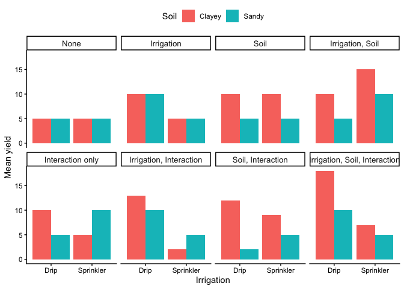
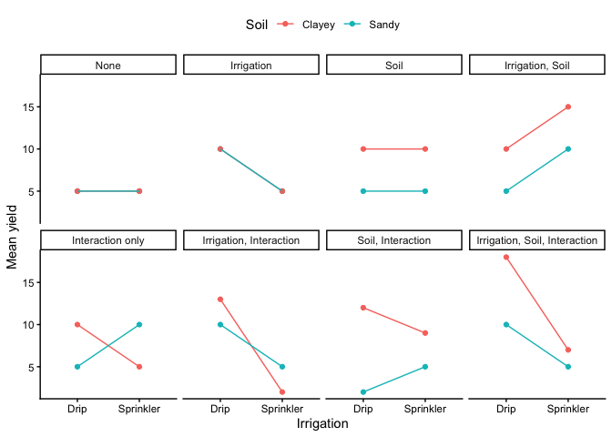
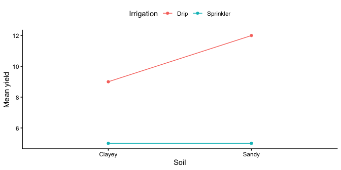
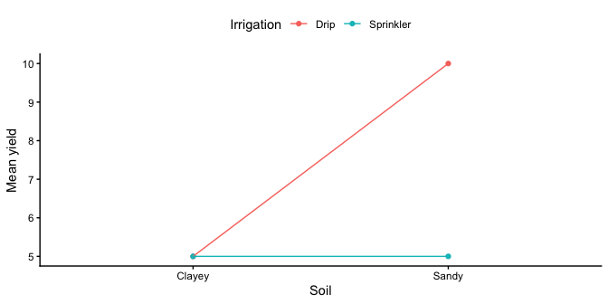
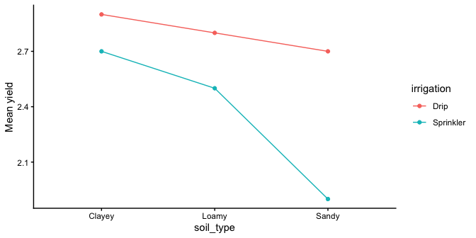
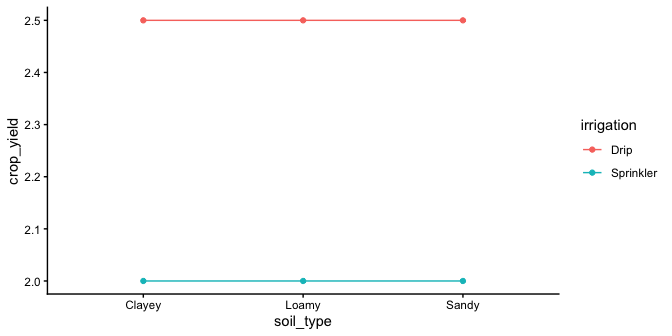
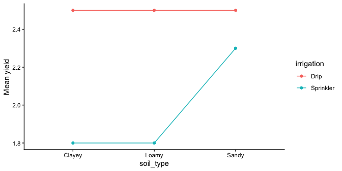

10 More On Factorial Designs
10.1 Intro
In this chapter we’re talking about factorial designs, where two or more independent variables (IVs) are studied together. The previous chapter walks you through the math of how these are calculated, and this chapter focuses on what you need to know to generate hypotheses and interpret factorial ANOVA results.
A reminder, factorials let you test:
- Main effects: the average effect of each factor on the outcome, and
- Interactions: whether the effect of one factor depends on the level of another.
That’s the core logic you’ll use for developing hypotheses for ANOVA tests.
To make this concrete, we’ll use a simple environmental example throughout this chapter:
Irrigation method (drip vs. sprinkler) × Soil type (sandy vs. clayey) predicting crop yield.
This 2×2 design has two factors (irrigation and soil) and one dependent variable (yield). Each factor has two levels (drip & sprinkler ; sandy & clayey), hence “2×2”. It’s simple enough to visualize but realistic for many environmental studies.
10.2 Applied primer: what you test in a 2×2
A two-way (2×2) ANOVA tests three effects, so you’ll have three null hypotheses:
- a main effect of irrigation,
- a main effect of soil type, and
- an irrigation × soil type interaction.
We can represent the four combinations of conditions and their mean yields as:
| Irrigation | Soil Type | Mean yield |
|---|---|---|
| Drip | Sandy | \(\mu_{\text{Drip,Sandy}}\) |
| Drip | Clayey | \(\mu_{\text{Drip,Clayey}}\) |
| Sprinkler | Sandy | \(\mu_{\text{Sprinkler,Sandy}}\) |
| Sprinkler | Clayey | \(\mu_{\text{Sprinkler,Clayey}}\) |
10.2.1 Hypotheses
Main effect of irrigation
- Null (\(H_0\)): There is no effect of irrigation method on mean yield.
- Alternative (\(H_1\)): Irrigation method affects mean yield.
Main effect of soil type
- Null (\(H_0\)): There is no effect of soil type on mean yield.
- Alternative (\(H_1\)): Soil type affects mean yield.
Irrigation × soil type interaction
- Null (\(H_0\)): The effect of irrigation method is the same across soil types. (In symbols: \((\mu_{\text{Drip,Sandy}}-\mu_{\text{Sprinkler,Sandy}})=(\mu_{\text{Drip,Clayey}}-\mu_{\text{Sprinkler,Clayey}})\).)
- Alternative (\(H_1\)): The effect of irrigation method differs across soil types.
Plain English: Under the interaction null, the difference between drip and sprinkler yields is consistent across soils. If that difference changes (for example, drip helps much more in sandy soils), you’ve found an interaction.
10.2.2 Template sentences (swap in your variables)
Main effect of A
- Null: There is no effect of A on mean [DV].
- Alternative: A affects mean [DV].
Main effect of B
- Null: There is no effect of B on mean [DV].
- Alternative: B affects mean [DV].
A×B interaction
- Null: The effect of A on [DV] is the same at all levels of B. (In symbols: \((\mu_{A1,B1}-\mu_{A2,B1})=(\mu_{A1,B2}-\mu_{A2,B2})\).)
- Alternative: The effect of A on [DV] differs across levels of B.
Note
General form You’ll sometimes see this written in abstract terms, with “Factor A” and “Factor B.” For example: \(H_0: (\mu_{A1,B1}-\mu_{A2,B1})=(\mu_{A1,B2}-\mu_{A2,B2})\). It’s the same logic: just replace A and B with your own variables.
10.3 Reading patterns in a 2×2
In any 2×2 ANOVA, there are eight general outcome patterns; different combinations of main effects and interactions. You don’t need to memorize all eight, but you should learn to read them in a line plot:
| Pattern | Main Effect: Irrigation | Main Effect: Soil | Interaction |
|---|---|---|---|
| 1 | |||
| 2 | X | ||
| 3 | X | X | |
| 4 | X | X | |
| 5 | X | X | X |
| 6 | X | ||
| 7 | X | X | |
| 8 | X |
We’ll create bar and line graphs to illustrate these patterns. Bar graphs are great for seeing differences in means directly, while line graphs help us spot interactions. Figure 10.1 shows the possible patterns of main effects and interactions in bar graph form.
Here’s what to look for:
- Parallel lines → no interaction.
- Non-parallel or crossing lines → interaction likely.
- Vertical separation between group means → main effect.
For example:
- If the drip vs. sprinkler lines are consistently apart, there’s a main effect of irrigation.
- If the lines cross or diverge, the irrigation effect changes across soil types, showing an interaction.
- If one line sits higher overall (say, sandy soils always yield more), that’s a main effect of soil.
Figure 10.2 shows the same patterns in line graph form:

In the line graphs, interactions are easiest to see:
- Parallel lines mean no interaction (the irrigation effect is the same across soils).
- Crossing lines mean an interaction (the irrigation effect differs by soil).
- Vertical shifts between drip and sprinkler lines reflect a main effect of irrigation.
Order of interpretation. When we conduct a two-way ANOVA, we always begin by testing the interaction term.
If the null hypothesis of no interaction is rejected, we do not interpret the main effects in isolation, because they are not consistent across conditions. Instead, we focus on the simple effects that describe how one factor behaves at each level of the other. IReport simple effects (A at each level of B, or vice versa) rather than standalone main effects.
If the interaction is not significant, we then examine the two main effects separately, interpreting each as an overall difference averaged across the other factor.
10.4 Interpreting main effects and interactions
Understanding main effects and interactions is essential for accurately interpreting research data, especially in complex fields like environmental science. Often, it is convenient to think of main effects as a consistent influence of one manipulation. However, the picture changes when we introduce an interaction. An interaction occurs when the effect of one IV depends on another IV. By definition, an interaction means that some main effect is not behaving consistently across different situations.
Why interactions matter. An interaction means the effect of one factor depends on the level of another. In the irrigation × soil example (Figure 10.2), drip irrigation raises yield most in sandy soils and less in clayey soils. The irrigation effect is not constant across soils, so the average “main effect” of irrigation can mislead if read without context.
How to read it.
- Look for non-parallel or crossing lines. That signals that simple effects differ across levels of the other factor.
- Report the pattern using simple effects: e.g., “Irrigation increased yield in sandy soils, showed a smaller increase in loamy soils, and showed little change in clayey soils.”
- If you must report a main effect, qualify it: “There was a main effect of irrigation, but it varied by soil type.”
Here are two generalized examples to help you make sense of these issues:
10.4.1 A consistent main effect and an interaction

Figure 10.3 shows a main effect and interaction. There is a main effect of irrigation. The drip irrigation (red points and line) are both higher than the sprinkler means (aqua points and line). There is also an interaction. The size of the difference between drip and sprinkler irrigation is higher in Sandy Soil (right) than it is in Clayey soil (left).
How would we interpret this? We could say there WAS a main effect of Irrigation, BUT it was qualified by an Irrigation x Soil Type interaction.
What’s the qualification? The size of the Irrigation effect changed as a function of the levels of Soil Type. It was big for Sandy Soil Type, and smaller for Clayey Soil Type.
What does the qualification mean for the main effect? Well, first it means the main effect of Irrigation can be changed Soil Type. That’s important to know. Does it also mean that the main effect is not a real main effect because there was an interaction? Not really, there is a generally consistent effect of Irrigation: Drip Irrigation is associated with higher mean yields. Whatever Drip Irrigation is doing, it seems to work relatively consistently, even if Soil Type also causes some change to the influence.
10.4.2 An “averaged” main effect that’s actually driven by an interaction

Figure 10.4 shows another 2×2 design. You should see an interaction here straight away. The difference between the Drip and Sprinkler irrigation in Sandy Soil is huge, and there is 0 difference between them in condition Clayey Soils. Is there an interaction? Yes!
Are there any main effects here? With data like this, sometimes an ANOVA will suggest that you do have significant main effects. For example, what is the mean difference between level Drip and Sprinkler Irrigation? That is the average of the green points ( (10+5)/2 = 15/2= 7.5 ) compared to the average of the red points (5). There will be a difference of 2.5 for the main effect (7.5 vs. 5).
Starting to see the issue here? From the perspective of the main effect (which collapses over everything and ignores the interaction), there is an overall effect of 2.5. In other words, Drip Irrigation adds 2.5 Yield in general compared to Sprinkler Irrigation. However, we can see from the graph that Irrigation does not do anything in general. It does not add 2.5s everywhere. It adds 5 in Sandy Soils, and nothing in Clayey Soils. It only does one thing in one condition.
What is happening here is that a “main effect” is produced by the process of averaging over a clear interaction.
How would we interpret this? We might have to say there was a main effect of Irrigation, BUT we would definitely say it was qualified by a Soil Type x Irrigation Interaction.
What’s the qualification? The size of the Irrigation effect completely changes as a function of the levels of Soil Type. It was big for level Sandy Soil, and nonexistent for Clayey Soil.
What does the qualification mean for the main effect? In this case, we might doubt whether there is a main effect of Irrigation at all. It could turn out that Irrigation does not have a general influence over the Yield all of the time, it may only do something in very specific circumstances, in combination with the presence of other factors.
10.5 More complicated designs
Up until now we have focused on the simplest case for factorial designs, the 2×2 design, with two IVs, each with 2 levels. It is worth spending some time looking at a few more complicated designs and how to interpret them.
10.5.1 3x2 design
This design works exactly like the 2×2 you already know, it just adds one more level to one factor. This design works like the 2×2 you already know; it simply adds one more level to soil type. The test structure is the same (two main effects and one interaction). What changes is how easy it is to interpret the interaction.
Let’s expand our irrigation example. Suppose we examine crop yield (DV) under two irrigation methods (drip vs. sprinkler) across three soil types (sandy, loamy, clayey).
- The main effect of irrigation tests whether, on average, drip and sprinkler differ in yield across all soils.
- The main effect of soil tests whether mean yield differs among soil types.
- The interaction tests whether the irrigation effect (drip − sprinkler) changes with soil type.
In a 2×2 design, you can easily spot interactions by looking for non-parallel lines. In a 3×2, it’s still the same idea; but with three lines, patterns get trickier to read. The statistical test is identical, but interpretation requires more care.
You have three hypotheses in a 3×2 factorial design:
H₁: Main effect of Soil
- Null (\(H_{0,1}\)): \(\mu_{\text{Sandy}} = \mu_{\text{Loamy}} = \mu_{\text{Clayey}}\)
- Alternative (\(H_{a,1}\)): At least one soil type mean differs from the others.
H₂: Main effect of Irrigation
- Null (\(H_{0,2}\)): \(\mu_{\text{Drip}} = \mu_{\text{Sprinkler}}\)
- Alternative (\(H_{a,2}\)): Mean yield differs between drip and sprinkler irrigation.
H₃: Irrigation × Soil interaction
- Null (\(H_{0,3}\)): The irrigation effect is the same across all soil types. \([ (\mu_{\text{Drip,Sandy}}-\mu_{\text{Sprinkler,Sandy}}) = (\mu_{\text{Drip,Loamy}}-\mu_{\text{Sprinkler,Loamy}}) = (\mu_{\text{Drip,Clayey}}-\mu_{\text{Sprinkler,Clayey}}) ]\)
- Alternative (\(H_{a,3}\)): The irrigation effect differs across soil types (i.e., at least one difference of differences is not equal).
Remember, this is far better than running two separate single factor ANOVAs that contrast irrigation effects for each level of soil type because you have more statistical power (higher degrees of freedom) for the tests of interest, and you get a formal test of the interaction between factors which is often scientifically interesting.
We might expect data like shown in Figure 10.5:

The figure shows some pretend means in all conditions. Let’s talk about the main effects and interaction.
Main Effect of Irrigation Method: The main effect of the irrigation method is evident. Drip irrigation (represented by red line) generally leads to higher crop yields compared to sprinkler irrigation (represented by aqua line).
Main Effect of Soil Type: The main effect of soil type is clearly present. Clayey soils show the highest yield, followed by loamy soils, then sandy soils
Interaction Between Irrigation Method and Soil Type: Is there an interaction? Yes, there is. Remember, an interaction occurs when the effect of one IV depends on the levels of an another. The advantage of drip irrigation over sprinkler irrigation is more pronounced in sandy soil compared to clayey soil. So, the size of the irrigation effect (drip vs. sprinkler) changes with the type of soil. There is evidence in the means for an interaction. You would have to conduct an inferential test on the interaction term to see if these differences were likely or unlikely to be due to sampling error.
If there was no interaction and no main effect of soil type, we would see something like the pattern in Figure 10.6.

What would you say about the interaction if you saw the pattern in Figure 10.7?

The correct answer is that there is evidence in the means for an interaction. Remember, we are measuring the irrigation effect (effect of drip vs. sprinkler) three times. The irrigation effect is the same for clayey and loamy soils, but it is much smaller for sandy soils. The size of the irrigation effect depends on the levels of the soil type IV, so here again there is an interaction.
10.6 Designs Beyond This Course
Once you understand the 2×2 logic, everything else in factorial ANOVA builds from the same foundation. But complexity grows quickly, both in the number of effects and in how hard they are to interpret.
10.6.1 2×2×2 (Three-Factor) Designs
A 2×2×2 design includes three independent variables, each with two levels. That creates:
- three main effects (one per variable)
- three two-way interactions (A×B, A×C, B×C)
- one three-way interaction (A×B×C)
You can think of it as two 2×2 plots side-by-side; one for each level of the third variable.
A three-way interaction means that one of the two-way interactions changes across the third variable. For example, the irrigation × soil interaction might look different for corn than for wheat.
That’s all you really need to know: interactions can themselves interact. The math is identical in structure, but the number of effects grows fast, and the graphs become difficult to interpret. In applied research, most studies stop at two factors unless there’s a strong reason to add more.
10.6.2 Mixed Designs
Sometimes one factor is between-subjects (e.g., different sites or treatments) and another is within-subjects (e.g., repeated measures over time). This is called a mixed design.
The interpretation of main effects and interactions is the same, but the error terms used in the F-tests differ, and the data structure must account for repeated measures. These models are important in longitudinal and environmental time-series studies, but they’re beyond our current scope.
Takeaway: Factorial ANOVA can handle almost any experimental structure, but interpretability drops as factors multiply. Start simple: use only the number of factors needed to answer your scientific question clearly.